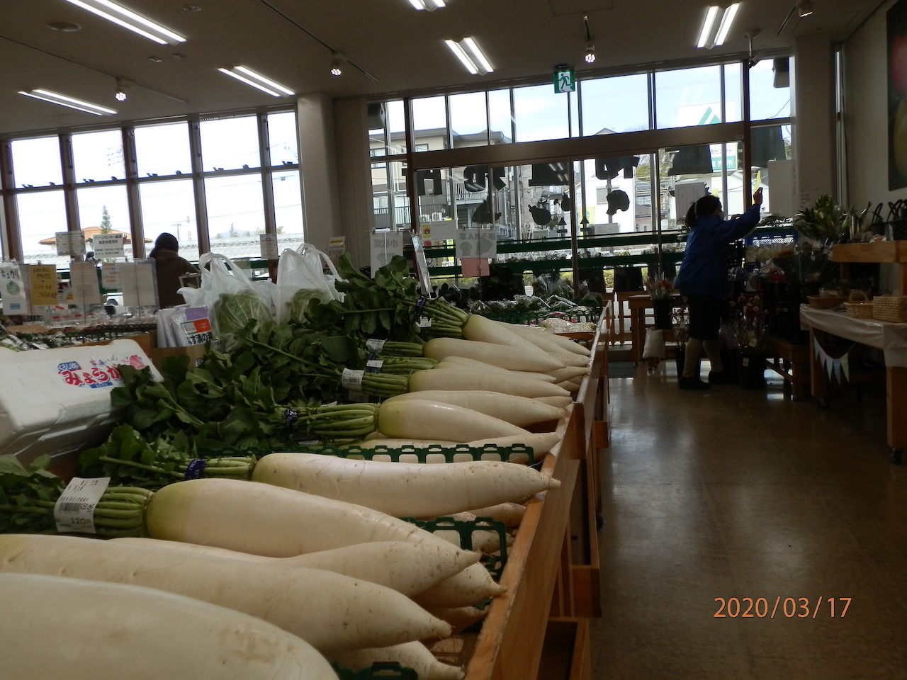

まちのグルメを、
あじわう。
綾瀬市に来たら一度は食べて欲しいグルメをご紹介
やはり初めて訪れた街で最も気になるのが食事ではないでしょうか？
綾瀬市には美味しいグルメが味わえる店舗がたくさんあります。
新鮮、採れたて野菜から、旨味たっぷりの肉料理、
さらに子どもが喜ぶスイーツまで！
その中でも特にオススメの店舗をご紹介します。
JAさがみ グリーンセンター
「JAさがみ グリーンセンター」では、 地元生産者が直接持ち込む新鮮、採れたての野菜をお買い求めできます。 それぞれの野菜には生産者の名前がしっかり表示されているので安心です。 店内に入ると、育ちの良い大きな大根が一際目を引き、 それぞれの野菜のサイズからお得な気分を感じます。 また、初夏のトウモロコシや冬のブロッコリーなど、 季節に合わせた旬の野菜が店頭に並んでいるため、 いつ来ても、どの野菜を選んでも美味しく頂けます。 野菜以外にも、果実・米・肉・花・惣菜・アイス・肥料など さまざまな商品を取り扱っています。 綾瀬市の大地で育った新鮮、採れたての旬な野菜を 味わってみたい方はぜひ訪れてみてはいかがでしょうか。
住所：〒252-1107 綾瀬市深谷中3-4-5
営業時間：9:00~17:00 定休日：毎月第3水曜
高座豚手作りハム

高座豚手作りハムでは、明治時代からの長い歴史を持つ「高座豚」を 使用したハム、ソーセージ等を販売しています。高座豚は飼育の難しさから 1970年代半ばにほぼ全滅の危機に晒されましたが、地元養豚家 の方々の苦労もあって、今では新生高座豚として復活しました。 脂身が甘くまろやかで旨みがあり、非常にジューシーな味わいが口の中に広がります。 ハム、ソーセージ等の食肉加工品だけでなく、お店の方に注文すると、出来立てホヤホヤのとんかつ を揚げてもらうこともできます。とても柔らかく、旨みたっぷりのとんかつはご飯のお供にもぴったりです。 ここでしか味わえない貴重なお肉をぜひ召し上がってみてください。
住所：〒252-1124 綾瀬市吉岡2366-8
営業時間：10:30~18:30 定休日：月曜（祝日の場合は営業）
Patisserie irodori
irodoriは、午後のひとときにぴったりの甘さ控えめな大人スイーツ が味わえるお店です。店名には、子供からお年寄りまで食べやすい彩り豊かなお菓子で 日常を幸せな気持ちに彩るという思いが込められています。店頭にはお客さんの誕生日をお祝いするデコレーションケーキや 種類豊富なカットケーキ、可愛い焼き菓子ギフトが数多く並んでいます。旅の最後を 甘いもので締めたい方や家族や友人にギフトを送りたい方は是非立ち寄ってみてください。
住所：〒252-1107 綾瀬市深谷中2-2-43
営業時間：10:00~19:00 定休日：水曜・第3火曜（祝日の場合は翌日）